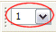

图层设置对话框
使用图层设置对话框来放置对象到 NX 文件中的不同图层上，并为部件中的所有视图设置图层的可见性与可选性。
在图层设置对话框的图层设置组中有四个图层选项可用：
-
设为可选：位于可选图层上的对象都将显示，并在所有操作中都可选。可选图层是自动可见的，图层不能是不可见的同时但仍然可选。
-
设为工作图层：工作图层是创建的对象将要被放置的图层，工作只能在工作图层上完成，当您新建部件时，图层1是工作图层。
-
设为仅可见：所有设为仅可见的对象会显示但不可选，除非图层指定为可选。
-
设为不可见：不可见图层中包含的对象将不会显示，并且不可选。
当前工作图层显示在实用工具工具条上的工作图层中。

|
提示 |
如果工作图层没有显示在实用工具工具条上，使用工具条选项 |